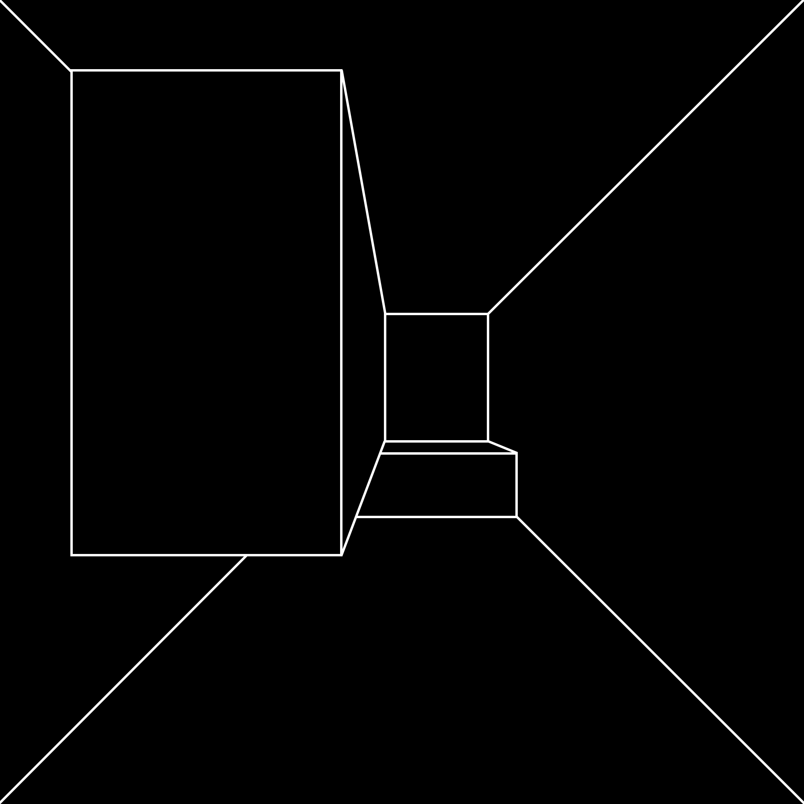

Barbara Henstein Smith, in her book Poetic Closure: A Study of How Poems End, says this: “Perhaps all we can say, and even this may be too much, is that varying degrees or states of tension seem to be involved in all our experiences,
and that the most gratifying ones are those in which whatever tensions are created are also released.
Or, to use another familiar set of terms, an experience is gratifying to the extent that those expectations that are aroused are also fulfilled.”